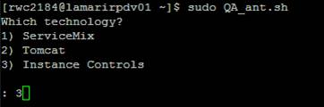
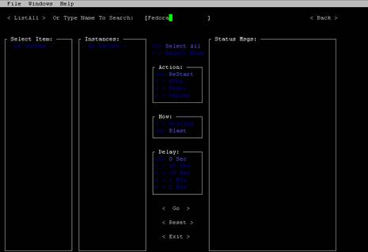
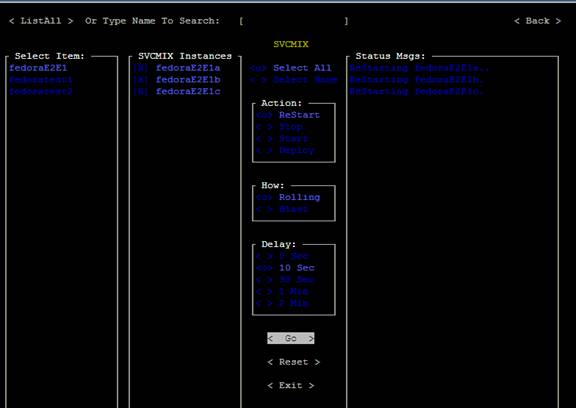
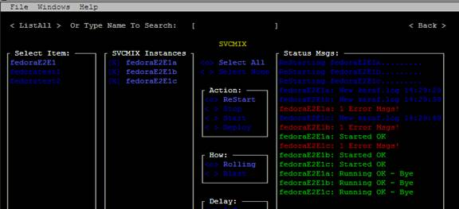
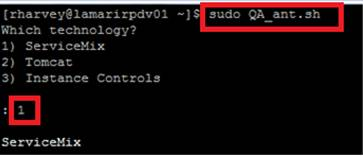
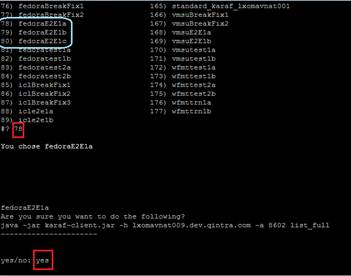
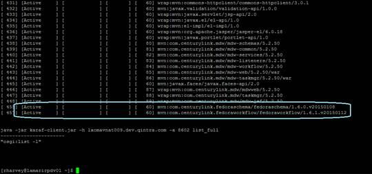

BOUNCE SERVICE MIX – FEDORA E2E example
Summary list of steps:
- $ sudo QA_ant.sh
option 3

- type Fedora and hit Enter

- Arrow key to which one you want.. we are doing E2E so it is first in the list,
then Hit tab key until you get to Rolling (Rolling or Blast – means hard bounce).
Then tab to go and hit enter
this will bounce all 3 instances

- You know its done when you see the OK ~ Bye message for each instance
I ignore those red errors msg....not sure but no one has ever said they were bad and need to investigate

- After you are done with the bounce do a full list to make sure process are active status:
$ sudo QA_ant.sh
Choose 1 – Service Mix

- Select 2 – list –l (full)
- Choose 78 for fedoraE2E1a (repeat for E2E1b (79), E2E1c(80))
Type yes

- And check that feddoraE2E1a is active (repeat for E2E1b , E2E1c)
